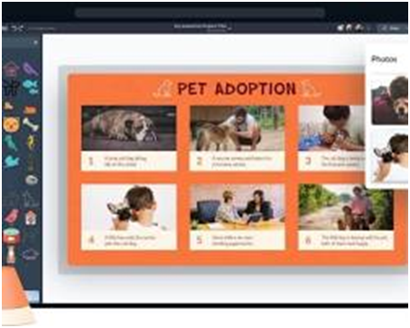
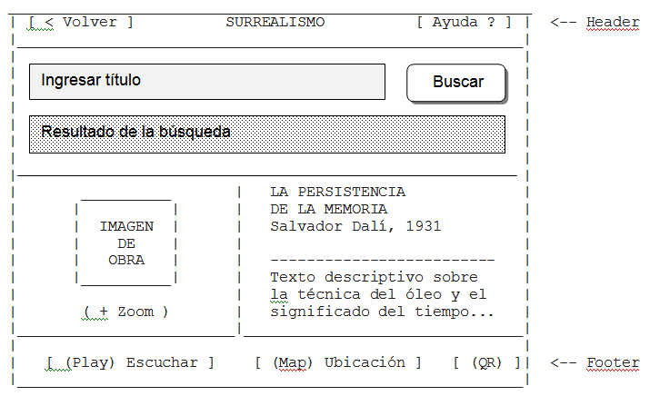

Usabilidad y Experiencia de Usuario (UX) en Entornos Controlados
Principios de usabilidad aplicados a sistemas cerrados:
Los sistemas cerrados deben diseñarse con un enfoque centrado en el usuario, aplicando principios de usabilidad que aseguren una experiencia clara, eficiente y sin frustraciones. Entre los principios fundamentales se encuentran:
- Claridad: La interfaz debe ser comprensible y fácil de
- Autoexplicación: El sistema debe comunicar su funcionamiento sin necesidad de instrucciones
- Mitigación de la frustración: El diseño debe prevenir errores y facilitar la recuperación de los mismos, reduciendo la frustración del usuario.
Diseño de interfaces claras y autoexplicativas (affordances):
Una interfaz efectiva debe guiar al usuario de manera intuitiva. Los elementos visuales deben tener affordances claras, es decir, deben sugerir su funcionalidad. Por ejemplo, los botones deben parecer presionables, los íconos deben ser reconocibles y las acciones posibles deben ser evidentes sin necesidad de instrucciones adicionales.
Pruebas de usuario sencillas para validar el flujo predefinido:
En sistemas cerrados, es fundamental realizar pruebas de usuario con prototipos o versiones preliminares del sistema. Estas pruebas permiten identificar obstáculos en la navegación, evaluar la comprensión de la interfaz y validar que el flujo de interacción previsto sea claro y efectivo para los usuarios.
Arquitectura de la Información: Modelos lineal, jerárquico y malla fija:
- Modelo lineal: Presenta la información en una secuencia fija, ideal para contenidos con un orden lógico.
- Modelo jerárquico: Organiza la información en niveles, permitiendo una navegación
- Modelo de malla fija: Ofrece múltiples caminos de navegación entre contenidos, pero sin posibilidad de modificación por el usuario.
El rol del Mapa de Navegación y el Storyboard en sistemas cerrados:
El Mapa de Navegación representa gráficamente la estructura del sistema, mostrando las relaciones entre las diferentes pantallas o secciones. El Storyboard detalla visualmente cada pantalla, sus elementos y la interacción esperada, facilitando la planificación y desarrollo del sistema. Ambas herramientas son esenciales para garantizar una experiencia de usuario coherente y efectiva en entornos controlados.
En los sistemas cerrados, donde el usuario tiene un entorno controlado y limitado, la planificación debe ser mucho más rigurosa que en una web abierta.
El Storyboard (Guion Gráfico)
Mientras el wireframe muestra la estructura de una pantalla, el storyboard muestra la secuencia de acciones a través del tiempo.
- ¿Qué incluye? Una serie de viñetas que representan momentos clave de la interacción.
- Uso de Metadatos: Debajo de cada viñeta se suele explicar qué sonido suena, qué animación ocurre y qué sucede cuando el usuario toca un elemento.
- Contexto: En sistemas multimedia, el storyboard es vital para planificar transiciones de audio y video.

Wireframe
El wireframe es un esquema que muestra la disposición de elementos en una pantalla (botones, menús, campos de texto, imágenes, etc.), indicando su ubicación y jerarquía, pero sin aplicar colores, tipografías ni estilos finales. Se centra en la funcionalidad y usabilidad más que en la apariencia.
Propósitos principales
- Organizar la información: definir qué elementos estarán presentes y cómo se relacionan.
- Visualizar la interacción: mostrar cómo el usuario navegará entre pantallas o secciones.
- Comunicar ideas: servir como herramienta de discusión entre diseñadores, desarrolladores y clientes.
- Reducir errores: detectar problemas de usabilidad antes de invertir tiempo en diseño gráfico o programación.
Características
- Aspecto minimalista (cajas, líneas, texto simulado).
- No incluye colores ni tipografías definitivas.
- Puede ser dibujado a mano o con herramientas digitales (ej. Figma, Balsamiq, Adobe XD).
- Se centra en la estructura, no en el diseño final.
Ejemplo práctico
En una aplicación de biblioteca digital:
- Un wireframe de la pantalla de búsqueda mostraría:
- Caja de texto para ingresar el título.
- Botón “Buscar”.
- Lista de resultados en formato de rectángulos con texto simulado.
- Barra de navegación superior con opciones básicas.
En resumen: el wireframe es el plano arquitectónico de una interfaz, equivalente a los planos de una casa antes de elegir colores, muebles o decoración.
Representación Visual (Esquema)

Diferencias Clave
|
Herramienta |
¿Qué muestra? |
Enfoque Principal |
|
Mapa de Navegación |
La estructura global |
Rutas y enlaces entre secciones |
|
Storyboard |
El flujo narrativo |
Acción, tiempo y feedback |
|
Wireframe |
El diseño de pantalla |
Ubicación de elementos |
Herramientas Sugeridas (Portables y Web)
- Miro: Tiene plantillas específicas para User Flows y Storyboards que son excelentes.
- Twine (Portable/Web): Una herramienta increíble para planificar narrativas no lineales y flujos complejos en sistemas multimedia.
- Storyboarder (Portable): Software gratuito y muy visual para crear guiones gráficos rápidamente.
Consejo: En los sistemas cerrados, siempre debe haber un botón de "Inicio" visible en el mapa de navegación para que cualquier usuario pueda reiniciar la experiencia si se confunde.